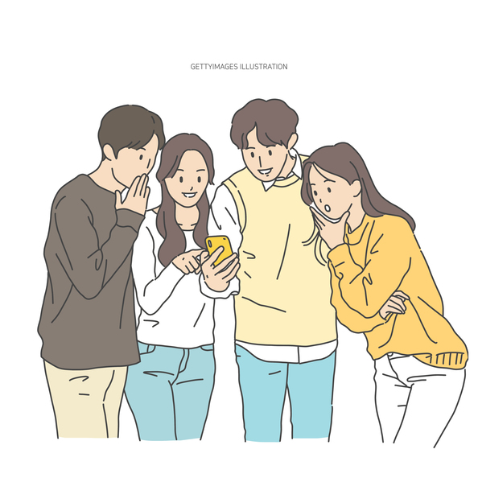

JOUNGIM SON
안녕하세요 디자인을 전공하고 있는 손정임입니다.
HOME
UI UX
PRODUCT

제가 작업한 UI UX 과정및 시각물을 소개해 드리겠습니다.
총 세개의 프로젝트로 구성되어있고, 각각의 컨셉,백그라운드, 과정, 시각물 이러한 순서로 보여드리겠습니다.
첫번째 작업
2020-2022
두번째 작업
2020-2021
세번째 작업
2019-2020
학사 과정중 과제로 ~프로젝트를 진행하였고, 이는 ~을 최종 결과물로써 가치를 부여하였습니다.